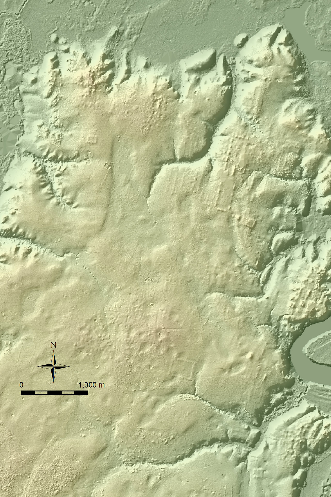

Chapter 2 Difference and change
Readings: 347-360
Objectives:
#. (Deriv-1b) Know how to calculate the value at a single point of a derivative function.
#. (Deriv-1c) Understand that differentiation is an operator that produces a function called the derivative.ROUGH ROUGH ROUGH
Lidar measured distance to ground. The function value doesn’t really matter. What matters is how the value at a point relates to the values at nearby points. Seeing this difference is how you can spot the Maya ruins.

Instituto Nacional de Estadística y Geografía/Nacional Center for Airborne Laser Mapping
"The map, published in 2011 by Mexico’s National Institute of Statistics and Geography, covered 4,440 square miles in the Mexican states of Tabasco and Chiapas. It was made as part of the institute’s mission to create accurate maps to be used by businesses and researchers.
“Dr. Inomata learned about the map from Rodrigo Liendo, an archaeologist at the National Autonomous University of Mexico. The resolution of the map was low. But the outlines of countless archaeological sites stood out to Dr. Inomata. So far, he has used it to identify the ruins of 27 previously unknown Maya ceremonial centers that contain a type of construction that archaeologists had never seen before. These sites may hold insights into the origins of Maya civilization.”